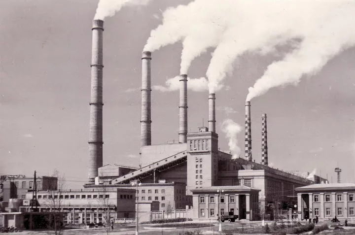
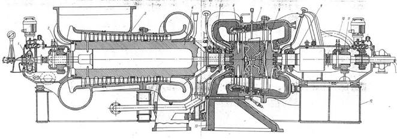
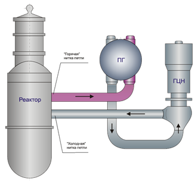

During the USSR, in which the newsreel tells, there were very important events - the construction of power plants. Shaturska, Kakhovskaya and Volkhovskaya power plants are just some of them.

GOELRO was a state-owned company that was engaged in the electric power industry. It was created in the USSR after the Civil War. The main idea of this company is to cover the whole country with power grids and equipment. It was an important step to develop the country and be an example for others.
Dneproges was one of the most important power plants of those times. Thanks to her, lamps lit up in the country and the development of mechanical engineering and science began.There were many power plants in the USSR that were much more powerful than planned in the GOELRO plan. This indicates that they have made progress and improved living conditions thanks to the electric power industry.
The film shows new technologies in production and the development of energy engineering, which help the country to become stronger.
During the 11th five-year plan, the Leningrad Metal Plant set itself big goals. He wanted to create an atomic millionaire and produce machines for various energy complexes and stations. The main task of the plant was to produce cars and GTN-25

together with the Low Machine-building Plant named after Lenin. Izhora Plant named after Zhdanov was engaged in serial production of hull equipment for nuclear reactors, which contributed to the development of nuclear energy. VVER-440 reactors
they were successfully used not only in Russia, but also in other countries. Improved reactor models, such as VVER-1000,
they were very economical. They worked at high temperature and pressure, and special steel was used to create them, which withstood earthquakes and neutron irradiation.
The introduction of a new technology into steel production after a reduction in production led to an improvement in the durability and reliability of nuclear power plants that suffered from radiation embrittlement. New materials and methods of steel smelting allow it to withstand neutron irradiation and not break. This helped to improve the operation of nuclear power equipment. Also, the new technology increased the economic effect by a third and extended the life of the reactor by 12 years. The quality of steel does not change under different conditions. The introduction of new steels helped to save a lot of alloys and money. These new steels have received patents in many countries and are used in various reactors.
In Volgodonsk, at a nuclear enterprise, it was possible to find a solution to the problem with the production of GCN 195 pump housings.

Previously, these cases were made of separate parts, but now, thanks to modern technologies and automation, the production process has become much easier. Previously, they used chrome-plated steel and cast the body using electric arc furnaces and computer models. After that, forging into ring shells and zones takes place.
They also introduced a new technology - a surfaced anticorrosive coating for metal slabs. This helps to obtain sheets of large thickness and weight, which they used to make separators of nuclear reactors. They also used welding and special equipment in the process of making separators. The city also has unique equipment for processing large parts and automated machines for welding large assemblies. The development in technology attracted attention not only from the USSR, but also from other countries.
In the production association "Krasny", they constantly worked on the development and implementation of new technologies and equipment. This made it possible to create more powerful and efficient power plants. Thanks to new welding methods, they have increased productivity and strengthened the walls of pipes, which leads to cost savings and improved product quality.
One of the main goals of the association is the development of modern and efficient turbines and models for power plants. This will help meet the growing demand for energy and improve economic efficiency. But the main role in achieving success is played by the people. It was thanks to their efforts and hard work that they mastered the production of powerful turbines.
In the 50s, there was a merger, which led to an increase in the capacity of turbines. This caused the need to create a stable technological process and reduce manual work. Software control machines were used, which help to do a lot of work and do it well. There were 500 such machines in the USSR, and they are very useful in the production of hydraulic turbine blades. A unique installation is used to create welded rotors, and programs can fully process blades and complex parts. Such technologies help to solve complex problems and improve the compatibility of parts. But they also led to a reduction in the number of skilled workers, since now people who have been trained are working.
A large wheel is made by welding all 14 blades at the same time when they have a constant temperature. To make it stronger, it undergoes heat treatment and mechanical treatment. Such wheels are delivered by special ships from Leningrad to Vancouver across the oceans. The Lenin Plant fulfilled all the conditions of the contract on time. The company is also engaged in mass production of GTN 25 gas pumping units with high pressure. New technologies and equipment were shown at the exhibition, including the mold creation process and electron beam welding.
The plant with extensive production experience undertook to make GTN 25 gas pumping units in large quantities that will withstand high pressure. The exhibition presents new technologies, such as the use of special molds and electronic welding, which helps to improve product quality and save materials. The plant shows a high level of scientific and technical support. Its gas pumping units are successfully operating in the country's gas systems. The modern energy industry creates conditions for the USSR to become an industrial and electric country